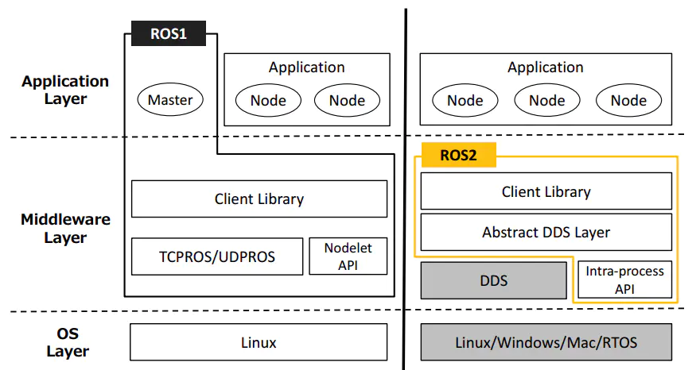

ROS2 Introduction
The predecessor of ROS2 is ROS, and ROS is the Robot Operating System (Robot Operating System). But ROS itself is not an operating system, but a software library and toolset. The emergence of Ros solved the communication problem of each component of the robot. Later, more and more robot algorithms were integrated into ROS. ROS2 inherited ROS, which is more powerful and better than ROS.
1 Design Goals And Features Of ROS2
ROS2 has the historical mission of changing the era of intelligent robots. At the beginning of the design, it was considered to meet the needs of various robot applications.
Multi-Robot Systems: In the future, robots will not be independent individuals, and communication and collaboration between robots are also required. ROS2 provides standard methods and communication mechanisms for the application of multi-robot systems.
Cross-platform: Robot application scenarios are different, and the control platforms used will also be very different. In order to allow all robots to run ROS2, ROS2 can run on Linux, Windows, MacOS, and RTOS across platforms.
Real time: Robot motion control and many behavior strategies require the robot to be real-time. For example, the robot must reliably detect pedestrians in front of it within 100ms, or complete kinematics and dynamics calculations within 1ms. ROS2 is a real-time like this Basic requirements are provided.
Productization: A large number of robots have entered our lives, and there will be more and more in the future，ROS2 can not only be used in the robot research and development stage, but also can be directly installed in the product and go to the consumer market. This also poses a huge challenge to the stability and robustness of ROS2.
Project management: Robot development is a complex system engineering. The project management tools and mechanisms for the whole process of design, development, debugging, testing, and deployment will also be reflected in ROS2, making it easier for us to develop a robot.
2 Release Version
The release version and maintenance cycle corresponding to ROS2 and Ubuntu.
| ROS2 version | release date | Maintenance deadline | Ubuntu version |
|---|---|---|---|
| Dashing | 2019.5 | 2021.5 | Ubuntu 18.04 (Bionic Beaver) |
| Eloquent | 2019.11 | 2020.11 | Ubuntu 18.04 (Bionic Beaver) |
| Foxy | 2020.6 | 2023.5 | Ubuntu 20.04(Focal Fossa) |
| Galactic | 2021.5 | 2022.11 | Ubuntu 20.04(Focal Fossa) |
| Humble | 2022.5 | 2027.5 | Ubuntu 22.04(Jammy Jellyfish) |
3 Comparison Of ROS And ROS2
ROS2 redesigned the system architecture. The architecture changes between the two generations of ROS are as follows:

OS Layer: In ROS2, it can be built on linux or other systems, even bare metal without an operating system.
Middleware Layer: The communication system of ROS1 is based on TCPROS/UDPROS, while the communication system of ROS2 is based on DDS. DDS is a standard solution for data publishing/subscribing in distributed real-time systems.
Application Layer: ROS1 relies on ROS Master, while in ROS2, a discovery mechanism called "Discovery" is used between nodes to help establish connections with each other.
ROS has designed a complete set of communication mechanisms (topics, services, parameters, actions) to simplify robot development. Through this mechanism, the various components of the robot can be connected. This mechanism has designed a node called Ros Master, and the communication of all other components must go through the master node. Once the master node hangs up, it will cause the communication of the entire robot system to collapse! Therefore, the instability of Ros cannot be used to make some high-risk robots such as automatic driving. In addition, there are the following disadvantages:
- Communication based on TCP has poor real-time performance and high system overhead
- Unfriendly to python3 support
- Messaging mechanism is not compatible
- No encryption mechanism, low security
ROS2 first removes the master node that exists in ROS. After removing the master node, each node can discover each other through the DDS node, each node is equal, and can realize one-to-one, one-to-many, and many-to-many communication. After using DDS for communication, reliability and stability have been enhanced.
Compared with ROS that only supports Linux systems, ROS2 also supports windows, mac, and even RTOS platforms
4 Moveit2
MoveIt2 Introduction
MoveIt2 is an integrated development platform within ROS2. It consists of multiple functional packages for manipulating robotic arms, including motion planning, manipulation, control, inverse kinematics, 3D perception, and collision detection.
Core Features
Motion Planning MoveIt 2 provides motion planning capabilities based on the Open Motion Planning Library (OMPL) and other third-party libraries, supporting a variety of planning algorithms and constraints.
Inverse Kinematics (IK) MoveIt 2 uses a plugin mechanism to support different IK solvers, enabling rapid calculation of the target pose of the robotic arm.
Collision Detection & Avoidance MoveIt 2 includes powerful built-in collision detection capabilities to ensure that the robot avoids collisions with its surroundings when planning and executing motions.
Dynamic Scene Awareness MoveIt 2 supports dynamic updates of its environment model, enabling real-time perception of obstacle changes.
Control & Execution MoveIt 2 provides a motion control interface that tightly integrates with the robot hardware, ensuring accurate execution of planned paths.
Visualization Tools Integrated with RViz 2, it supports intuitive interaction and debugging, displaying the motion planning and execution process in real time.
Advantages Of MoveIt 2
Real-time Support Based on ROS 2 ROS 2's DDS communication architecture empowers MoveIt 2, significantly improving real-time performance and reliability.
Modular Design MoveIt 2 utilizes a modular architecture, allowing users to load or replace modules as needed, providing tremendous flexibility.
Cross-Platform Support MoveIt 2 supports running on a variety of operating systems (such as Ubuntu and Windows) and hardware platforms.
Active Community Support MoveIt 2 has a global developer community that continuously provides updates, feature extensions, and technical support.
Configuration
URDF - Universal Robot Description Format.
SRDF - Contains the robot's joint groups, virtual and passive joints, robot pose, and self-collision, typically created by the user using the MoveIt2 Setup Assistant.
MoveIt2 Configuration - Contains joint limits, kinematics, motion planning, perception, and other information. Configuration files for these components are automatically generated by the MoveIt2 Setup Assistant (MoveIt2 Configuration Assistant) and stored in the configuration directory of the robot's corresponding MoveIt2 configuration package.